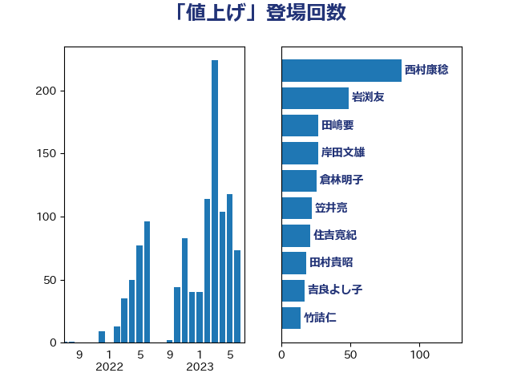

単語「値上げ」

| 西村康稔 | 自由民主党 | 87 回 |
| 岩渕友 | 日本共産党 | 49 回 |
| 田嶋要 | 立憲民主党 | 27 回 |
| 岸田文雄 | 自由民主党 | 27 回 |
| 倉林明子 | 日本共産党 | 26 回 |
| 笠井亮 | 日本共産党 | 22 回 |
| 住吉寛紀 | 日本維新の会 | 21 回 |
| 田村貴昭 | 日本共産党 | 18 回 |
| 吉良よし子 | 日本共産党 | 17 回 |
| 竹詰仁 | 国民民主党 | 14 回 |
| 河野太郎 | 自由民主党 | 14 回 |
| 小西洋之 | 立憲民主党 | 14 回 |
| 福島伸享 | 無所属 | 12 回 |
| 井坂信彦 | 立憲民主党 | 12 回 |
| 野村哲郎 | 自由民主党 | 11 回 |
| 村田享子 | 立憲民主党 | 11 回 |
| 石井苗子 | 日本維新の会 | 10 回 |
| 田村智子 | 日本共産党 | 10 回 |
| 泉健太 | 立憲民主党 | 10 回 |
| 宮本徹 | 日本共産党 | 10 回 |
| 大西健介 | 立憲民主党 | 10 回 |
| たがや亮 | れいわ新選組 | 10 回 |
| 青島健太 | 日本維新の会 | 9 回 |
| 野田佳彦 | 立憲民主党 | 9 回 |
| 緑川貴士 | 立憲民主党 | 9 回 |
| 櫻井周 | 立憲民主党 | 9 回 |
| 勝部賢志 | 立憲民主党 | 9 回 |
| 階猛 | 立憲民主党 | 8 回 |
| 池下卓 | 日本維新の会 | 8 回 |
| 横山信一 | 公明党 | 8 回 |
| 東徹 | 日本維新の会 | 8 回 |
| 後藤祐一 | 立憲民主党 | 8 回 |
| 中野洋昌 | 公明党 | 8 回 |
| 猪瀬直樹 | 日本維新の会 | 7 回 |
| 清水貴之 | 日本維新の会 | 7 回 |
| 浅野哲 | 国民民主党 | 7 回 |
| 高橋千鶴子 | 日本共産党 | 6 回 |
| 金城泰邦 | 公明党 | 6 回 |
| 辻元清美 | 立憲民主党 | 6 回 |
| 石橋通宏 | 立憲民主党 | 6 回 |
| 石川博崇 | 公明党 | 6 回 |
| 石井啓一 | 公明党 | 6 回 |
| 小野泰輔 | 日本維新の会 | 6 回 |
| 堀場幸子 | 日本維新の会 | 6 回 |
| 吉田とも代 | 日本維新の会 | 6 回 |
| 音喜多駿 | 日本維新の会 | 5 回 |
| 鈴木義弘 | 国民民主党 | 5 回 |
| 鈴木俊一 | 自由民主党 | 5 回 |
| 遠藤良太 | 日本維新の会 | 5 回 |
| 萩生田光一 | 自由民主党 | 5 回 |
| 芳賀道也 | 国民民主党 | 5 回 |
| 石井正弘 | 自由民主党 | 5 回 |
| 田村まみ | 国民民主党 | 5 回 |
| 田島麻衣子 | 立憲民主党 | 5 回 |
| 江藤拓 | 自由民主党 | 5 回 |
| 斉藤鉄夫 | 公明党 | 5 回 |
| 山添拓 | 日本共産党 | 5 回 |
| 塩田博昭 | 公明党 | 5 回 |
| 伊藤岳 | 日本共産党 | 5 回 |
| 阿達雅志 | 自由民主党 | 4 回 |
| 落合貴之 | 立憲民主党 | 4 回 |
| 菊田真紀子 | 立憲民主党 | 4 回 |
| 若松謙維 | 公明党 | 4 回 |
| 舟山康江 | 国民民主党 | 4 回 |
| 紙智子 | 日本共産党 | 4 回 |
| 田名部匡代 | 立憲民主党 | 4 回 |
| 末松信介 | 自由民主党 | 4 回 |
| 庄子賢一 | 公明党 | 4 回 |
| 土田慎 | 自由民主党 | 4 回 |
| 古賀之士 | 立憲民主党 | 4 回 |
| 伊藤孝恵 | 国民民主党 | 4 回 |
| 伊佐進一 | 公明党 | 4 回 |
| 中川宏昌 | 公明党 | 4 回 |
| 一谷勇一郎 | 日本維新の会 | 4 回 |
| 高橋はるみ | 自由民主党 | 3 回 |
| 青柳仁士 | 日本維新の会 | 3 回 |
| 長友慎治 | 国民民主党 | 3 回 |
| 鈴木敦 | 国民民主党 | 3 回 |
| 野間健 | 立憲民主党 | 3 回 |
| 赤木正幸 | 日本維新の会 | 3 回 |
| 西岡秀子 | 国民民主党 | 3 回 |
| 蓮舫 | 立憲民主党 | 3 回 |
| 舩後靖彦 | れいわ新選組 | 3 回 |
| 福山哲郎 | 立憲民主党 | 3 回 |
| 沢田良 | 日本維新の会 | 3 回 |
| 横沢高徳 | 立憲民主党 | 3 回 |
| 森本真治 | 立憲民主党 | 3 回 |
| 新垣邦男 | 立憲民主党 | 3 回 |
| 後藤茂之 | 自由民主党 | 3 回 |
| 岩谷良平 | 日本維新の会 | 3 回 |
| 山崎誠 | 立憲民主党 | 3 回 |
| 山口那津男 | 公明党 | 3 回 |
| 小沼巧 | 立憲民主党 | 3 回 |
| 小沢雅仁 | 立憲民主党 | 3 回 |
| 奥野総一郎 | 立憲民主党 | 3 回 |
| 丸川珠代 | 自由民主党 | 3 回 |
| 高木真理 | 立憲民主党 | 2 回 |
| 馬淵澄夫 | 立憲民主党 | 2 回 |
| 野田聖子 | 自由民主党 | 2 回 |
| 足立康史 | 日本維新の会 | 2 回 |
| 赤羽一嘉 | 公明党 | 2 回 |
| 藤木眞也 | 自由民主党 | 2 回 |
| 米山隆一 | 立憲民主党 | 2 回 |
| 空本誠喜 | 日本維新の会 | 2 回 |
| 玉木雄一郎 | 国民民主党 | 2 回 |
| 牧山ひろえ | 立憲民主党 | 2 回 |
| 滝波宏文 | 自由民主党 | 2 回 |
| 浜口誠 | 国民民主党 | 2 回 |
| 松山政司 | 自由民主党 | 2 回 |
| 杉田水脈 | 自由民主党 | 2 回 |
| 本村伸子 | 日本共産党 | 2 回 |
| 斎藤アレックス | 国民民主党 | 2 回 |
| 掘井健智 | 日本維新の会 | 2 回 |
| 川田龍平 | 立憲民主党 | 2 回 |
| 小森卓郎 | 自由民主党 | 2 回 |
| 宮本岳志 | 日本共産党 | 2 回 |
| 天畠大輔 | れいわ新選組 | 2 回 |
| 大串正樹 | 自由民主党 | 2 回 |
| 古賀千景 | 立憲民主党 | 2 回 |
| 古屋範子 | 公明党 | 2 回 |
| 加藤鮎子 | 自由民主党 | 2 回 |
| 加藤勝信 | 自由民主党 | 2 回 |
| 伊藤渉 | 公明党 | 2 回 |
| 仁比聡平 | 日本共産党 | 2 回 |
| 中村裕之 | 自由民主党 | 2 回 |
| 中川康洋 | 公明党 | 2 回 |
| おおつき紅葉 | 立憲民主党 | 2 回 |
| 高良鉄美 | 無所属 | 1 回 |
| 高木陽介 | 公明党 | 1 回 |
| 高木かおり | 日本維新の会 | 1 回 |
| 馬場雄基 | 立憲民主党 | 1 回 |
| 馬場伸幸 | 日本維新の会 | 1 回 |
| 阿部知子 | 立憲民主党 | 1 回 |
| 鈴木隼人 | 自由民主党 | 1 回 |
| 金村龍那 | 日本維新の会 | 1 回 |
| 金子俊平 | 自由民主党 | 1 回 |
| 里見隆治 | 公明党 | 1 回 |
| 道下大樹 | 立憲民主党 | 1 回 |
| 赤澤亮正 | 自由民主党 | 1 回 |
| 谷田川元 | 立憲民主党 | 1 回 |
| 谷合正明 | 公明党 | 1 回 |
| 西田昌司 | 自由民主党 | 1 回 |
| 西田実仁 | 公明党 | 1 回 |
| 若宮健嗣 | 自由民主党 | 1 回 |
| 羽田次郎 | 立憲民主党 | 1 回 |
| 窪田哲也 | 公明党 | 1 回 |
| 稲津久 | 公明党 | 1 回 |
| 福田昭夫 | 立憲民主党 | 1 回 |
| 福岡資麿 | 自由民主党 | 1 回 |
| 神谷裕 | 立憲民主党 | 1 回 |
| 神田潤一 | 自由民主党 | 1 回 |
| 神津たけし | 立憲民主党 | 1 回 |
| 石田昌宏 | 自由民主党 | 1 回 |
| 石川昭政 | 自由民主党 | 1 回 |
| 石井章 | 日本維新の会 | 1 回 |
| 矢倉克夫 | 公明党 | 1 回 |
| 片山大介 | 日本維新の会 | 1 回 |
| 片山さつき | 自由民主党 | 1 回 |
| 渡辺周 | 立憲民主党 | 1 回 |
| 浜地雅一 | 公明党 | 1 回 |
| 浅田均 | 日本維新の会 | 1 回 |
| 河西宏一 | 公明党 | 1 回 |
| 櫛渕万里 | れいわ新選組 | 1 回 |
| 森屋隆 | 立憲民主党 | 1 回 |
| 梅谷守 | 立憲民主党 | 1 回 |
| 梅村聡 | 日本維新の会 | 1 回 |
| 梅村みずほ | 日本維新の会 | 1 回 |
| 松野博一 | 自由民主党 | 1 回 |
| 松沢成文 | 日本維新の会 | 1 回 |
| 杉本和巳 | 日本維新の会 | 1 回 |
| 本田顕子 | 自由民主党 | 1 回 |
| 早坂敦 | 日本維新の会 | 1 回 |
| 広瀬めぐみ | 自由民主党 | 1 回 |
| 平林晃 | 公明党 | 1 回 |
| 平木大作 | 公明党 | 1 回 |
| 平山佐知子 | 無所属 | 1 回 |
| 岡田直樹 | 自由民主党 | 1 回 |
| 岡本三成 | 公明党 | 1 回 |
| 岡本あき子 | 立憲民主党 | 1 回 |
| 山本順三 | 自由民主党 | 1 回 |
| 山口晋 | 自由民主党 | 1 回 |
| 小田原潔 | 自由民主党 | 1 回 |
| 小池晃 | 日本共産党 | 1 回 |
| 小倉將信 | 自由民主党 | 1 回 |
| 宮崎雅夫 | 自由民主党 | 1 回 |
| 奥下剛光 | 日本維新の会 | 1 回 |
| 塩村あやか | 立憲民主党 | 1 回 |
| 堂込麻紀子 | 無所属 | 1 回 |
| 坂本祐之輔 | 立憲民主党 | 1 回 |
| 吉良州司 | 無所属 | 1 回 |
| 吉田統彦 | 立憲民主党 | 1 回 |
| 吉川元 | 立憲民主党 | 1 回 |
| 吉井章 | 自由民主党 | 1 回 |
| 古賀友一郎 | 自由民主党 | 1 回 |
| 佐々木さやか | 公明党 | 1 回 |
| 伊藤孝江 | 公明党 | 1 回 |
| 伊藤俊輔 | 立憲民主党 | 1 回 |
| 今井絵理子 | 自由民主党 | 1 回 |
| 仁木博文 | 無所属 | 1 回 |
| 井上英孝 | 日本維新の会 | 1 回 |
| 中野英幸 | 自由民主党 | 1 回 |
| 中谷真一 | 自由民主党 | 1 回 |
| 中西祐介 | 自由民主党 | 1 回 |
| 世耕弘成 | 自由民主党 | 1 回 |
| 上田英俊 | 自由民主党 | 1 回 |
| 上田清司 | 国民民主党 | 1 回 |
| 三浦信祐 | 公明党 | 1 回 |
| 三上えり | 立憲民主党 | 1 回 |
| ながえ孝子 | 無所属 | 1 回 |